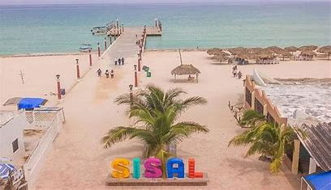
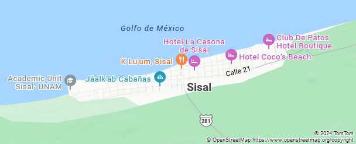
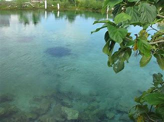

SISAL
IR AL MENU

SU MAGIA DEL HERMOSO LUGAR DE SISAL: En litoral norporinete de yucatan, se dibuja el pueblo de sisal escribe
su historia como puerto comercial, en la epoca de la colonial y hoy se
distingue por pertenecer a una zona de gran influencia biologica para
el caribe. Quien pisa su blanca arena queda prendado como le sucediera
hace años a carlota, la emperatriz la vida aqui pasa entre los paseos
en lancha para explorar lo que la naturaleza tuvo a bien regalarle a
SISAL.
¿PORQUE SISAL SE LE CONOCE COMO PUEBLO MAGICO?
El puerto de sisal fue uno
de los mas importantes en la epoca de la colonia, la comercializacion
de las fibras de henequen, algodon etc. En yucatan los habitantes
resisten a ser un pueblo magico por que la turistificacion ponen
en riesgo sus ecosistemas naturales Sisal es puerto mexicano ubicado al
principio de en el municipio de Hunucma, el litoral norponiente del
estado de yucatan, la zona norte esta bordeada por el golfo de mexicoy
el sur por la reserva ecologics estatal.
UBICACION

Esta ubicado en el litoral norponiente del estado de yucatan, en el
golfo de Mexico ubicado y localizado en el municipio de Hunucma.
EL MOTIVO:
"SUS BELLAS PLAYAS Y MANGLARES CON UN LEGADO HISTORICO"
- Durante la epoca colonial, sisal fue un puerto de gran importancia comercial, y politico.
- se
encuentra dentro de la reserva estatal, el palmar la reserva es un
sitio ramsar y una zona de influencia del corredor biologico
mesoamericano.
Su zona de humedales es habitad de una colonia considerable del flamenco rosa.
Los mas hermoso, es nadar por lo manglares y la buena vista
IMPRESCINDIBLES
- Aventurarse en las rias y avistar cocodrilos.
- Admikrar el atardecer en sus playas y muelle
- Zambullirse en los manintales de agua dulce.
- Deleitarse en los aromas de su cocina.
CENOTE CERCA DE SISAL
Se encuentra el cenote de a unos kilometros de sisal cenote xcajum, se ubica en el pueblo cuzama a unos 50 km de merida.

Sisal es lugar muy hermoso para ir a visitar, pasarla de unas buenas
vacaciones es lo mas bonito que puede pasar una gran experiencia que
nunca olvidaras.
¡Gracias!